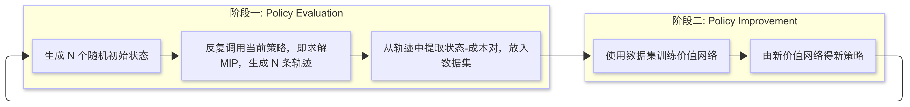
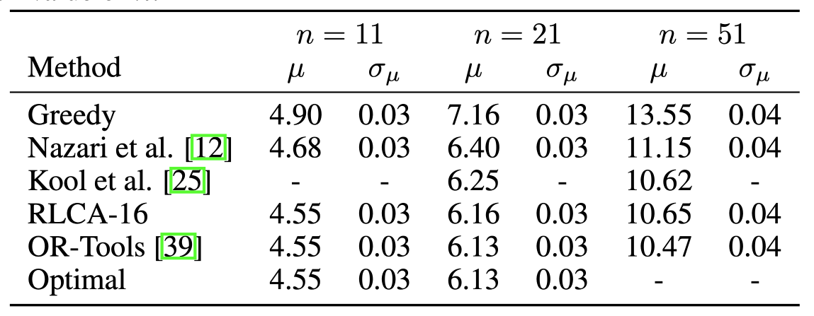

Paper Reading #3: RL4VRP
Last updated on September 8, 2025 pm
本文将精读论文 “Reinforcement Learning with Combinatorial Actions: An Application to Vehicle Routing”，作者 Delarue et al.，时间 2020 年，链接 arXiv:2010.12001。
论文概述
这是一篇 2020 年的强化学习方向的工作，主要针对的是 CVRP 问题。与之前的 RL 模型不同，这篇文章采用 Value-based RL + MIP（混合整数规划） 的方式。简单来说，给定策略 ，训练一个小型的神经网络近似 ，进而得到表达为 MIP 形式的新策略，如此不断更新。
Abstract
我们先阅读文章摘要：
Value-function-based methods have long played an important role in reinforcement learning. However, finding the best next action given a value function of arbitrary complexity is nontrivial when the action space is too large for enumeration. We develop a framework for value-function-based deep reinforcement learning with a combinatorial action space, in which the action selection problem is explicitly formulated as a mixed-integer optimization problem. As a motivating example, we present an application of this framework to the capacitated vehicle routing problem (CVRP), a combinatorial optimization problem in which a set of locations must be covered by a single vehicle with limited capacity. On each instance, we model an action as the construction of a single route, and consider a deterministic policy which is improved through a simple policy iteration algorithm. Our approach is competitive with other reinforcement learning methods and achieves an average gap of 1.7% with state-of-the-art OR methods on standard library instances of medium size.
这篇文章使用了 Value-function-based RL，即基于状态的强化学习，其做法是近似状态价值函数。最大的创新点是：策略函数（即下一个动作的选择）是对混合整数规划的求解。由于动作空间（即合法路线组合）非常巨大，传统的强化学习只能简化问题，把动作定义为“下一步去哪个地方”，但 MIP 求解器能够高效地求解出最优动作，每次生成一条路线，并且能保证路线的合法性。直观来看，模型能够目光更长远、选择更理性。但 MIP 求解质量高的前提是价值函数的估计比较准确，这类似一个 Bootstrapping 的过程：我们用当前策略训练价值函数，再用训练后更准确的价值函数来更新策略。具体的过程我们在模型部分详细探讨。
Introduction
Introduction 部分，作者首先介绍了 RL 的优势，即不需要专家知识。然而，在组合优化领域，基于 RL 的算法表现还并不是很好。作者指出，一大困难就是动作空间的表示。通常来说，组合优化问题的动作空间非常大，即合法的路径组合数量非常多。RL 算法一般会化简动作空间，比如简化到只选择下一个城市，但这就要求模型对整体的把握要好，避免短视的问题，因此需要比较复杂的模型架构，比如 Pointer Network 和 GNN。
但这篇文章中，作者打算抛弃对动作空间的化简，直接将其表达为混合整数规划问题求解。作者选择了 CVPR 问题作为主要实验对象，其动作选择模型会是一个带约束的 PCTSP 问题。
作者将论文的 contributions 概括为：
- We present a policy iteration algorithm for value-based reinforcement learning with combinatorial actions. At the policy improvement step, we train a small neural network with ReLU activations to estimate the value function from each state. At the policy evaluation step, we formulate the action selection problem from each state as a mixed-integer program, in which we combine the combinatorial structure of the action space with the neural architecture of the value function by adapting the branch-and-cut approach described in [14].
- We apply this technique to develop a reinforcement learning framework for combinatorial optimization problems in general and the Capacitated Vehicle Routing Problem in particular. Our approach significantly differs from existing reinforcement learning algorithms for vehicle routing problems, and allows us to obtain comparable results with much simpler neural architectures.
- We evaluate our approach against several baselines on random and standard library instances, achieving an average gap against the OR-Tools routing solver of 1.7% on moderately-sized problems. While we do not yet match state-of-the-art operations research methods used to solve the CVRP, we compare favorably with heuristics using oracles of equal strength to our action selection oracle and to other RL approaches for solving CVRP [12].
模型及训练方法
问题描述
CVRP (Capacitated Vehicle Routing Problem)，即带容量限制的车辆路径规划问题，在这篇论文中的表述如下。给定 个城市，编号为 到 ，其中 号城市是仓库，编号大于 的城市 都有一个需求 ，城市 和 之间的距离是 。仓库有一辆容量为 的车，需要给所有城市送货。我们的目标是规划最短的送货方式，即输出一系列路径（routes），使得：
- 每条路径从仓库开始，到仓库结束；
- 每个非仓库的城市都被恰好访问一次；
- 每条路径经过城市的总需求不超过货车容量 ；
- 所有路径的长度和最小。
我们将 CVRP 建模为一个序贯决策问题：
- 状态 ： 定义为所有未访问城市的集合。用一串二进制表示， 表示已经访问， 表示未访问，从而状态空间 。定义 表示没有除仓库外未访问城市的最终状态（我们始终认为仓库是未访问的）。
- 动作 ： 定义为一条合法路径（起点和终点都是仓库，至少访问一个城市）。那么动作空间 就是 个城市的所有部分排列（all partial permutations）构成的集合。定义 是状态 下所有合法动作的集合。
- 状态转移函数 ，即 表示在状态 下执行动作 后仍然未被访问的城市的集合。
- 成本函数 ，表示执行状态 后产生的成本，即这一路径的总距离。
- 策略 指定了在状态 下执行的动作。定义 是这些策略的集合。
- 状态价值函数 定义为从状态 不断采取策略 会产生的成本，即 。最优策略 。
从一个起始策略 开始，使用作者提出的 Policy Iteration 方法进行训练。每一轮训练分为 Policy Evaluation 和 Policy Improvement 两个阶段。第 轮中，
- 在 Evaluation 阶段，agent 使用当前策略 和环境进行交互，获得多条轨迹 (trajectories)。
- 在 Imrpovement 阶段，用刚才 trajectories 中的数据对价值网络 进行训练，以近似状态价值函数 ，并利用这个新的价值函数 生成新的策略 。
Policy Evaluation 阶段
在第 轮的 Policy Evaluation 阶段，我们会使用当前策略 和环境不断进行交互，获得很多轨迹。
- 首先，我们会随机选择 个起始状态 。
为了使得训练数据多样化，模拟并不是每次都从所有城市未访问的初始状态开始。在论文中，作者每次创造一个随机的初始局面：从仓库出发，随机地一个个挑选城市加入路线中，直到即将超出货车的容量。这种完成了一条随机路径的状态被用作模拟的初始状态。
- 接着，从每个起始状态 ，我们采样出一条轨迹（原文表示为动作-状态对），其中 ，，以及每个状态的成本（即状态价值） 。
我们具体看一下当前策略是什么。以第 轮为例，具体的策略 由第 轮的 Policy Improvement 阶段得到的近似的状态价值函数 及 Bellman 方程给出：
从(*)式可以看出，agent 会在所有合法动作中选择预估总成本最低的动作，即在所有合法路径中选择当前及之后所有路径的总长度最短的。
接下来到了最关键的问题，也是这篇文章的重点：给定一个状态 ，当前策略 如何给出使得(*)式最小的动作 ？作者正是在这里使用了混合整数规划（MIP）。通过将这个优化问题建模为 MIP，再使用 Gurobi 等 MIP 求解器快速求解。
不失一般性地，我们设状态 对 ，有 ；对 ，有 ，即只有前 个城市还未被访问。接着，我们将下一步动作的选择写成如下的 MIP 问题：
我们先理解一下其中的决策变量：
- (9)&(10) 表示规划的路径是否包含城市 （）： 表示路径中包含城市 ； 表示不包含。 规定了仓库必须在路线中。
- (8) 表明了路径访问城市的顺序： 表示在规划的路径中，车辆从城市 直接行驶到城市 ； 则反之。
- (7) 是用于状态更新的辅助变量，描述了执行完该动作后新的状态：如果城市 在规划的路径中没有被访问，即 ，那么在新的状态 下，城市 仍然是未被访问的状态，即 ；如果城市 在规划的路径中被访问，即 ，那么在新的状态下，城市 不再是未被访问的状态，即 。
接下来逐一解释目标函数和约束条件：
- (1) 目标函数：这里的目标函数和(*)式对应，表示最小化当前及未来所有路径（预估）的总长度，由立即成本和未来预估成本两项组成。
- 是立即成本，即当前选择出路径的总长度：只有当 时，即从 到 的路在当前路径中时，城市 和城市 之间的距离 才会被加到总和中。
- 是未来预估成本，即估计从新状态 出发直至完成所有任务要走的总距离。其中 是由所有 变量组成的向量，表示执行完这个动作后的新状态； 是用于近似状态价值函数的神经网络。
- (2)&(3) 流量守恒约束：这两条约束保证了路线的连贯性。 表示离开城市 的边的数量； 表示进入城市 的边的数量。如果城市 在路径中，即 ，那么路径中有且仅有一条边进入城市 ，也有且仅有一条边离开城市 ；如果不在路径中，即 ，则没有边进入或离开城市 。
- (4) 容量约束： 表示选中的路径上所有城市的需求之和（因为只有当 时，城市的需求 才会被算入总和），该总需求不能超过货车容量 。
- (5)&(6) 子回路消除约束：这两条约束保证了所有被选中的点形成一条连通仓库的环路，而不是多个互相独立的小圈圈（子回路）。以约束(5)为例，其含义是：对于任意一个未访问城市（不包含仓库）的子集 ，如果 中的任何一个城市 被选中，那么至少有一条边从 的内部出发，连接到 的外部。假设存在子回路，那么由子回路中所有点组成的集合 ，就不满足(5)和(6)两条约束。
注意两个点：首先，约束(5)和(6)的数量是指数级的，在实践中通常使用惰性约束（lazy constraints）的方法来添加，即求解器先不考虑这些约束，只有在找到了带子回路的解时，才会把对应的破圈约束加上，重新求解；其次，这个 MIP 并不直接是一个混合整数线性规划，因为 并不是线性函数，然而由于我们选择的激活函数是分段线性的 ReLU，我们可以将这个问题转化为线性的 MIP。
最坏情况下，这个 MIP 要在指数时间内解出。但现代的 MIP 求解器（如 Gurobi）采用分支定界法、割平面法等技巧，都能在合理的时间内生成高质量的解。
此外，作者还对目标函数做了增强，将 替换为了 ，其中 是一系列成本下界，如仓库到最远未访问城市的距离、所有未访问城市的最短入边长度之和等。作者指出，这种做法能使得价值估计更准确，提供更强的信号，加速模型收敛。
Policy Improvement 阶段
这个阶段的目的是对于当前策略 ，给出其状态价值函数 的近似，从而由(*)式得到新的策略。其中状态价值函数 就是采用策略 访问 中所有剩余城市的成本。
由于价值函数需要出现在 MIP 的求解当中，其复杂度不能太高，而且尽量要线性，作者用一个小型的神经网络 来近似状态价值函数。该网络仅包含了全连接的隐藏层和 ReLU 激活函数，采用 Evaluation 阶段产生的很多状态-成本对进行训练，使用均方误差（MSE）损失。同时，作者把训练数据中的一部分用于评估效果。
为了防止探索不足及过拟合，作者将历史数据继续用于训练，但在其损失函数上乘了 的衰减系数。具体来说，设第 轮生成的 个数据点中的第 个为 ，那么第 轮的损失函数为 ，即每过一轮，同一训练数据的权重衰减 。
总结

事实上，本文将训练和评估两个任务进行了分离。在评估阶段使用 CPU 进行 MIP 求解，CPU 适合这种高强度的数学优化计算；在训练阶段使用 GPU 进行神经网络训练，不需要 MIP 求解，降低了训练时的计算负担。这样，训练和评估可以并行进行，并分别使用合适的硬件，加速了整个流程。
实验及结果
作者在 uniform 生成的 CVRP 数据集上进行实验，规模较小（），与 Greedy、OR-Tools、AM 等 baseline 进行比较，结果如下表。

可以看出，本文方法（RLCA）在求解质量上优于简单的 heuristic 算法（Greedy）和其他的 RL 方法，并几乎达到了 SOTA 运筹学求解器（OR-Tools）的水平。
但与之前的 RL 学习的 distributional setting 不同，本文模型是 single-instance setting，在一个实例上训练很多次，因而不需要关注问题分布的先验信息，可以直接应用于现实世界中那些一次性的、没有相似历史数据的问题。作者将本文模型用于 CVRPLIB 中的 50 个标准实例上，经过 100 轮迭代，最终结果与 OR-Tools 的平均差距仅为 1.7%。
对于求解时间，核心的瓶颈在于 MIP 的求解，而非网络的训练。对于一次策略迭代，运行时间可以这么计算：模拟轨迹数 每条轨迹求解 MIP 的数量 MIP 求解时间。尽管不同的轨迹之间可以并行进行，求解 MIP 的时间其实是很慢的。例如，对于 ，SCIP 求解器要 240s 的时间，从而每次策略迭代都需要一个小时的时间。
作者还探讨了模拟路径数量、是否保留历史数据、是否使用神经网络、是否增加成本下界对最终 gap 的影响。